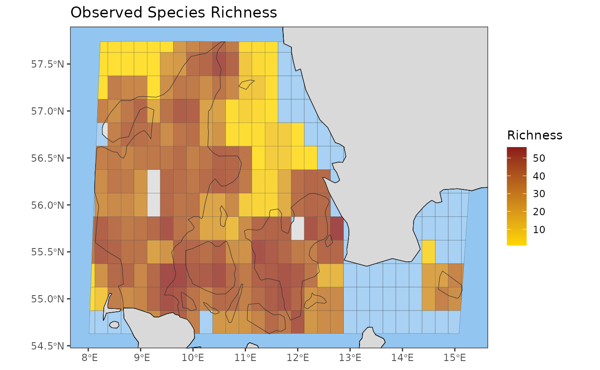

Introduction
The goal of this tutorial is to get you familiar with how to use the b3gbi package, which contains a number of functions for calculating and plotting biodiversity indicators from GBIF occurrence cubes. The package is not ready for official release yet, but it is publicly available at https://www.github.com/b-cubed-eu/b3gbi.
Below I will explain how to install the package on your own computer, and give a quick tutorial on the core functions, with examples. Given that the package is unfinished and has undergone limited testing, it is possible that you will encounter errors.
Package Installation
install.packages("b3gbi", repos = "https://b-cubed-eu.r-universe.dev")Core Functions
Let’s have a look at the core functions of the b3gbi package. The first one is called process_cube() and is used to import GBIF occurrence cubes from .csv files into R objects. It is very simple to use. You only need to provide it with the name and location of a cube in .csv format. Note that there are different versions of GBIF cubes floating around, and the format has changed. Since most of the code for this package was created before the present generation came available, it is compatible with both the old and new cubes. The old ones come with an additional .csv file containing taxonomic information for the cube.
# Function 1: process_cube()
# Description: Imports a data cube from a .csv file and prepares it as a
# processed_cube object for indicator calculations and plotting.
#
# Inputs:
# * Argument 1: data, cube in .csv format
# * Argument 2: grid_type (optional). By default the function will attempt to
# determine this automatically. However, you have the option to
# manually specify 'eea', 'mgrs', or 'eqdgc'. If you are using a
# simulated cube. e.g. output by the gcube package, choose
# 'custom'.
# * Argument 3: first_year (optional), you can filter your cube to include
# only data in a certain time period, by default this will be
# the first year of data in your cube
# * Argument 4: last_year (optional), by default this will be the last year
# of data in your cube
# * Argument 5: force_gridcode (optional), this will force the function to
# assume a specific grid reference code, not recommended and
# could lead to problems downstream.
#
# The remaining arguments are all column names. Some columns are required, some
# are not, but it is only necessary to provide the names if they cannot be
# autodetected by the function.
# * Argument 6: cols_year (optional), the name of the column containing the
# year of occurrence. You must have either a year or yearMonth
# column in your cube.
# * Argument 7: cols_yearMonth (optional), the name of the column containing
# the year and month of occurrence
# * Argument 8: cols_cellCode (optional), the name of the column containing
# the cell codes. This column is required
# * Argument 9: cols_occurrences (optional), the name of the column
# containing species occurrences. This column is required
# * Argument 10: cols_scientificName (optional), the name of the column
# containing species names. This column is required
# * Argument 11: cols_minCoordinateUncertaintyInMeters (optional), the name
# of the column containing the minimum coordinate uncertainty.
# This column is not required
# * Argument 12: cols_minTemporalUncertainty (optional), the name of the
# column containing the minimum temporal uncertainty. This
# column is not required
# * Argument 13: cols_kingdom (optional)
# * Argument 14: cols_family (optional)
# * Argument 15: cols_species (optional), you must have either a
# scientificName or a species column, but you do not need both
# * Argument 16: cols_kingdomKey (optional)
# * Argument 17: cols_familyKey (optional)
# * Argument 18: cols_speciesKey (required), this can be either a taxonKey or
# speciesKey
# * Argument 19: cols_familyCount (optional)
# * Argument 20: cols_sex (optional)
# * Argument 20: cols_lifeStage (optional)
#
# Outputs:
# * processed_cube object containing the data cube as output_object$data
# along with various metadata.
#
# metadata include: range of years (as first_year and last_year),
# coordinate range (as xmin, xmax, ymin, ymax),
# number of grid cells (num_cells),
# number of species (num_species),
# total number of observations (num_obs),
# vector of kingdoms (kingdoms),
# number of families (num_families),
# resolutions (resolution)
# Example:
library(b3gbi)
denmark_cube <- process_cube(system.file("extdata",
"denmark_mammals_cube_eqdgc.csv",
package="b3gbi"))
denmark_cube
#>
#> Processed data cube for calculating biodiversity indicators
#>
#> Date Range: 1862 - 2024
#> Single-resolution cube with cell size 0.25degrees
#> Number of cells: 323
#> Grid reference system: eqdgc
#> Coordinate range:
#> xmin xmax ymin ymax
#> 3.375 15.625 54.375 58.125
#>
#> Total number of observations: 207342
#> Number of species represented: 106
#> Number of families represented: 31
#>
#> Kingdoms represented: Animalia
#>
#> First 10 rows of data (use n = to show more):
#>
#> # A tibble: 31,632 × 15
#> year cellCode kingdomKey kingdom familyKey family taxonKey scientificName
#> <dbl> <chr> <dbl> <chr> <dbl> <chr> <dbl> <chr>
#> 1 1862 E009N57DD 1 Animalia 5510 Muridae 5219833 Micromys minu…
#> 2 1863 E009N57DD 1 Animalia 5510 Muridae 5219833 Micromys minu…
#> 3 1870 E009N57DD 1 Animalia 9368 Vesper… 2432439 Myotis dauben…
#> 4 1874 E009N57DD 1 Animalia 9368 Vesper… 2432439 Myotis dauben…
#> 5 1879 E009N57DB 1 Animalia 9368 Vesper… 2432439 Myotis dauben…
#> 6 1881 E008N56AB 1 Animalia 9435 Dipodi… 2439449 Sicista betul…
#> 7 1881 E015N55CC 1 Animalia 9701 Canidae 5219303 Vulpes lagopus
#> 8 1884 E008N56AB 1 Animalia 9435 Dipodi… 2439449 Sicista betul…
#> 9 1884 E014N55DD 1 Animalia 5510 Muridae 2437756 Apodemus flav…
#> 10 1884 E014N55DD 1 Animalia 5510 Muridae 2437760 Apodemus sylv…
#> # ℹ 31,622 more rows
#> # ℹ 7 more variables: obs <dbl>, minCoordinateUncertaintyInMeters <dbl>,
#> # minTemporalUncertainty <dbl>, familyCount <dbl>, xcoord <dbl>,
#> # ycoord <dbl>, resolution <chr>When you type the name of the cube object, the contents are displayed by a custom print function within the package. You can see the object structure using str().
str(denmark_cube)
#> List of 11
#> $ first_year : num 1862
#> $ last_year : num 2024
#> $ coord_range :List of 4
#> ..$ xmin: num 3.38
#> ..$ xmax: num 15.6
#> ..$ ymin: num 54.4
#> ..$ ymax: num 58.1
#> $ num_cells : int 323
#> $ num_species : int 106
#> $ num_obs : num 207342
#> $ kingdoms : chr "Animalia"
#> $ num_families: int 31
#> $ grid_type : chr "eqdgc"
#> $ resolutions : chr "0.25degrees"
#> $ data : tibble [31,632 × 15] (S3: tbl_df/tbl/data.frame)
#> ..$ year : num [1:31632] 1862 1863 1870 1874 1879 ...
#> ..$ cellCode : chr [1:31632] "E009N57DD" "E009N57DD" "E009N57DD" "E009N57DD" ...
#> ..$ kingdomKey : num [1:31632] 1 1 1 1 1 1 1 1 1 1 ...
#> ..$ kingdom : chr [1:31632] "Animalia" "Animalia" "Animalia" "Animalia" ...
#> ..$ familyKey : num [1:31632] 5510 5510 9368 9368 9368 ...
#> ..$ family : chr [1:31632] "Muridae" "Muridae" "Vespertilionidae" "Vespertilionidae" ...
#> ..$ taxonKey : num [1:31632] 5219833 5219833 2432439 2432439 2432439 ...
#> ..$ scientificName : chr [1:31632] "Micromys minutus" "Micromys minutus" "Myotis daubentonii" "Myotis daubentonii" ...
#> ..$ obs : num [1:31632] 2 1 1 1 1 1 1 1 1 1 ...
#> ..$ minCoordinateUncertaintyInMeters: num [1:31632] 1000 1000 1000 1000 1000 1000 1000 1000 1000 1000 ...
#> ..$ minTemporalUncertainty : num [1:31632] 86400 86400 86400 86400 86400 ...
#> ..$ familyCount : num [1:31632] 4493 4493 16848 16848 16848 ...
#> ..$ xcoord : num [1:31632] 9.88 9.88 9.88 9.88 9.88 ...
#> ..$ ycoord : num [1:31632] 57.1 57.1 57.1 57.1 57.4 ...
#> ..$ resolution : chr [1:31632] "0.25degrees" "0.25degrees" "0.25degrees" "0.25degrees" ...
#> - attr(*, "class")= chr "processed_cube"The cube itself is contained in a tibble (tidyverse version of data frame) called data, while other variables contain metadata.
Now let’s have a look at what indicators are available to calculate and plot.
available_indicators
#>
#>
#> Available Indicators
#>
#>
#> 1. Observed Species Richness
#> Class: obs_richness
#> Calculate map: yes, e.g. obs_richness_map(my_data_cube)
#> Calculate time series: yes, e.g. obs_richness_ts(my_data_cube)
#> Additional map function arguments: NA
#> Additional time series function arguments: NA
#>
#> 2. Total Occurrences
#> Class: total_occ
#> Calculate map: yes, e.g. total_occ_map(my_data_cube)
#> Calculate time series: yes, e.g. total_occ_ts(my_data_cube)
#> Additional map function arguments: NA
#> Additional time series function arguments: NA
#>
#> 3. Pielou's Evenness
#> Class: pielou_evenness
#> Calculate map: yes, e.g. pielou_evenness_map(my_data_cube)
#> Calculate time series: yes, e.g. pielou_evenness_ts(my_data_cube)
#> Additional map function arguments: NA
#> Additional time series function arguments: NA
#>
#> 4. Williams' Evenness
#> Class: williams_evenness
#> Calculate map: yes, e.g. williams_evenness_map(my_data_cube)
#> Calculate time series: yes, e.g. williams_evenness_ts(my_data_cube)
#> Additional map function arguments: NA
#> Additional time series function arguments: NA
#>
#> 5. Cumulative Species Richness
#> Class: cum_richness
#> Calculate map: no
#> Calculate time series: yes, e.g. cum_richness_ts(my_data_cube)
#> Additional map function arguments: NA
#> Additional time series function arguments: NA
#>
#> 6. Density of Occurrences
#> Class: occ_density
#> Calculate map: yes, e.g. occ_density_map(my_data_cube)
#> Calculate time series: yes, e.g. occ_density_ts(my_data_cube)
#> Additional map function arguments: NA
#> Additional time series function arguments: NA
#>
#> 7. Abundance-Based Rarity
#> Class: ab_rarity
#> Calculate map: yes, e.g. ab_rarity_map(my_data_cube)
#> Calculate time series: yes, e.g. ab_rarity_ts(my_data_cube)
#> Additional map function arguments: NA
#> Additional time series function arguments: NA
#>
#> 8. Area-Based Rarity
#> Class: area_rarity
#> Calculate map: yes, e.g. area_rarity_map(my_data_cube)
#> Calculate time series: yes, e.g. area_rarity_ts(my_data_cube)
#> Additional map function arguments: NA
#> Additional time series function arguments: NA
#>
#> 9. Mean Year of Occurrence
#> Class: newness
#> Calculate map: yes, e.g. newness_map(my_data_cube)
#> Calculate time series: yes, e.g. newness_ts(my_data_cube)
#> Additional map function arguments: NA
#> Additional time series function arguments: NA
#>
#> 10. Taxonomic Distinctness
#> Class: tax_distinct
#> Calculate map: yes, e.g. tax_distinct_map(my_data_cube)
#> Calculate time series: yes, e.g. tax_distinct_ts(my_data_cube)
#> Additional map function arguments: NA
#> Additional time series function arguments: NA
#>
#> 11. Species Richness (Estimated by Coverage-Based Rarefaction)
#> Class: hill0
#> Calculate map: yes, e.g. hill0_map(my_data_cube)
#> Calculate time series: yes, e.g. hill0_ts(my_data_cube)
#> Additional map function arguments: cutoff_length, coverage
#> Additional time series function arguments: cutoff_length, coverage
#>
#> 12. Hill-Shannon Diversity (Estimated by Coverage-Based Rarefaction)
#> Class: hill1
#> Calculate map: yes, e.g. hill1_map(my_data_cube)
#> Calculate time series: yes, e.g. hill1_ts(my_data_cube)
#> Additional map function arguments: cutoff_length, coverage
#> Additional time series function arguments: cutoff_length, coverage
#>
#> 13. Hill-Simpson Diversity (Estimated by Coverage-Based Rarefaction)
#> Class: hill2
#> Calculate map: yes, e.g. hill2_map(my_data_cube)
#> Calculate time series: yes, e.g. hill2_ts(my_data_cube)
#> Additional map function arguments: cutoff_length, coverage
#> Additional time series function arguments: cutoff_length, coverage
#>
#> 14. Species Occurrences
#> Class: spec_occ
#> Calculate map: yes, e.g. spec_occ_map(my_data_cube)
#> Calculate time series: yes, e.g. spec_occ_ts(my_data_cube)
#> Additional map function arguments: none
#> Additional time series function arguments: none
#>
#> 15. Species Range
#> Class: spec_range
#> Calculate map: yes, e.g. spec_range_map(my_data_cube)
#> Calculate time series: yes, e.g. spec_range_ts(my_data_cube)
#> Additional map function arguments: none
#> Additional time series function arguments: none
#>
#> 16. Occupancy Turnover
#> Class: occ_turnover
#> Calculate map: no
#> Calculate time series: yes, e.g. occ_turnover_ts(my_data_cube)
#> Additional map function arguments: none
#> Additional time series function arguments: noneEach available indicator is listed along with its class, and the functions used to calculate it as a map and/or time series.
The next function we need to understand is called compute_indicator_workflow(). This is the core of the package, where the work of calculating the indicator is done. Each indicator comes with its own wrapper functions, and these should be used rather than directly calling compute_indicator_workflow(). The wrapper functions are given in the details of available_indicators, but are also listed below for convenience.
# Function 2: compute_indicator_workflow()
# Description: Calculates a biodiversity indicator over time or space from a
# processed_cube object. Should be called by one of the wrapper functions listed below.
#
# Inputs:
# * Argument 1: data, a processed_cube object
# * Argument 2: type, the type of indicator to calculate
# * Argument 3: dim_type, dimension to calculate the indicator across time,
# 'ts', or space, 'map'.
# * Argument 4: ci_type (optional), type of bootstrap confidence intervals to
# calculate (norm, basic, perc, bca, none). Uses 'norm' by
# default.
# * Argument 5: cell_size (optional), the length (in km) of grid cells to use
# * Argument 6: level (optional), the scale of region to calculate over
# (country, continent, world). Uses the whole cube by default.
# * Argument 7: region (optional), the name of the region to calculate over
# (e.g. Germany, Europe). Uses the whole cube by default.
# * Argument 8: ne_type (optional), the type of natural earth data to
# download (countries, map units, sovereignty, geounit). Uses
# 'countries' by default.
# * Argument 9: ne_scale (optional), the scale of natural earth data to
# download (small - 110m, medium - 50m, large - 10m). Uses
# 'medium' by default.
# * Argument 10: output_crs (optional), the projection to use for your
# calculated indicator if you don't want the default.
# * Argument 11: first_year (optional), use to limit the data used to
# calculate the indicator to a narrower range than the cube.
# * Argument 12: last_year (optional), see first_year.
# * Argument 13: spherical_geometry (optional), if FALSE, temporarily turn
# off spherical geometry when calculating indicator.
# * Argument 14: make_valid (optional), call st_make_valid from the sf
# package to fix geometry issues if you are getting errors.
# * Argument 15: num_bootstrap (optional), set the number of bootstraps to
# calculate for generating confidence intervals. Uses 1000 by
# default.
# * Argument 16: shapefile_path, path to an external shapefile you want to
# use for cropping your data
# * Argument 17: shapefile_crs (optional), CRS of your shapefile if it is
# .wkt format and is not EPSG:4326
# * Argument 18: invert, invert the shapefile
# * Argument 19: include_water, include ocean and lake layers from
# rnaturalearth. Defaults to FALSE. Alternatively you can set it
# to "buffered_coast" for to set a buffer distance around land.
# * Argument 20: buffer_dist_km, Distance to buffer around the land if
# include_water set to "buffered_coast".
#
# Outputs:
# * indicator_ts or indicator_map object containing a data frame of indicator
# values mapped to years or grid cells, along with various metadata.
#
# metadata include: range of years (as first_year and last_year),
# coordinate range (as xmin, xmax, ymin, ymax),
# number of grid cells (num_cells),
# number of species (num_species),
# total number of observations (num_obs),
# vector of kingdoms (kingdoms),
# number of families (num_families),
# resolutions (resolution)
#
# Wrapper functions:
# * obs_richness_map(): Calculate a gridded map of observed richness
# * obs_richness_ts(): Calculate a time series (trend) of observed richness
# * cum_richness_ts(): Calculate cumulative richness over time
# * total_occ_map(): Calculate the total number of records over a gridded map
# * total_occ_ts(): Calculate the total number of records over time
# * occ_density_map(): Calculate the density of records over a gridded map
# * occ_density_ts(): Calculate the density of records over time
# * williams_eveness_map(): Calculate Williams' evenness over a gridded map
# * williams_evenness_ts(): Calculate Williams' evenness over time
# * pielou_evenness_map(): Calculate Pielou's evenness over a gridded map
# * pielou_evenness_ts(): Calculate Pielou's evenness over time
# * ab_rarity_map(): Calculate abundance-based rarity over a gridded map
# * ab_rarity_ts(): Calculate abundance-based rarity over time
# * area_rarity_map(): Calculate area-based rarity over a gridded map
# * area_rarity_ts(): Calculate area-based rarity over time
# * newness_map(): Calculate the mean year of occurrence over a gridded map
# * newness_ts(): Calculate the mean year of occurrence over time
# * tax_distinct_map(): Calculate taxonomic distinctness over a gridded map
# * tax_distinct_ts(): Calculate taxonomic distinctness over time
# * occ_turnover_ts(): Calculate occupancy turnover over time
#
# Example:
library(b3gbi)
Denmark_observed_richness_map <- obs_richness_map(example_cube_1,
first_year = 1980,
level = "country",
region = "Denmark")
Denmark_observed_richness_map
#> Gridded biodiversity indicator map
#>
#> Name of Indicator: Observed Species Richness
#>
#> Map of Denmark
#>
#> Projected CRS: EPSG:4326
#>
#> Coordinate range:
#> xmin ymin xmax ymax
#> 8.016236 54.628857 15.483170 57.736914
#>
#> Grid cell size: 0.25 degrees
#> Number of cells: 387
#>
#> Observation years: 1980 - 2023
#> Total years with observations: 44
#>
#> Number of species represented: 106
#> Number of families represented: 31
#>
#> Kingdoms represented: Animalia
#>
#> Map layers:
#>
#> First 10 rows of data (use n = to show more):
#>
#> # A tibble: 387 × 3
#> cellid area diversity_val
#> <int> [km^2] <int>
#> 1 68 447. NA
#> 2 69 447. NA
#> 3 70 447. 20
#> 4 71 447. 34
#> 5 72 447. 32
#> 6 73 447. 34
#> 7 74 447. 47
#> 8 75 447. 48
#> 9 76 447. 37
#> 10 77 447. 21
#> # ℹ 377 more rowsWhen you type the name of the indicator object, you will again see that it is plotted by an internal function of the package. As with the cube objects, indicator objects contain a tibble called data. In the case of a mapped indicator, the tibble is also an sf object containing geometry information for each cell.
Each indicator object belongs to two specialized object classes which determine how it is handled when you use the plot() command. First, it has either the class ‘indicator_ts’ or ‘indicator_map’. Second, it has a class specific to the indicator type. You can see this using the class() command.
class(Denmark_observed_richness_map)
#> [1] "indicator_map" "obs_richness"These are S3 classes (S3 being one of several objected oriented programming systems contained within R).
The final functions we will need to interface with are the plot functions. These are plot_ts() and plot_map(), but in fact they are called using plot(). The plot functions offer quite a few arguments to customize the output, but the plotting is done using the ggplot package, so further customization is quite easy.
# Function 3: plot_ts()
# Description: Plots an indicator_ts object as a time series using ggplot.
# Called by plot().
# Inputs:
# * Argument 1: x, an indicator_ts object
# * Argument 2: min_year (optional), earliest year to include in plot
# * Argument 3: max_year (optional), latest year to include in plot
# * Argument 4: title (optional), specify a title for the plot
# * Argument 5: auto_title (optional), specified by the calling function if
# title is set to "auto"
# * Argument 6: y_label_default (optional), specified by the calling function
# if no y_label is provided
# * Argument 7: suppress_y (optional), default is "FALSE". Set to "TRUE" to
# turn off y axis text
# * Argument 8: smoothed_trend (optional), default is "TRUE". Set to "FALSE"
# to avoid displaying only the time series, without a smoothed
# trend
# * Argument 9: linecolour (optional), sets the colour of the indicator line
# or points. Default is darkorange.
# * Argument 10: linealpha (optional), sets the transparency of the indicator
# line or points. Default is 0.8.
# * Argument 11: ribboncolour (optional), colour for bootstrapped confidence
# intervals. Default is goldenrod1. Set to NA if you don't
# want to plot the CIs.
# * Argument 12: ribbonalpha (optional), transparency for confidence interval
# ribbon (if CI type set to 'ribbon'. Default is 0.2.
# * Argument 13: error_alpha (optional), transparency for error bars (if CI
# type set to 'error_bar). Default is 1.
# * Argument 14: trendlinecolour (optional), sets the colour of the smoothed
# trend line. Default is blue.
# * Argument 15: trendlinealpha (optional), sets the transparency of the
# smoothed trend line. Default is 0.5.
# * Argument 16: envelopecolour (optional), sets the colour of the smoothed
# trend envelope. Default is lightsteelblue.
# * Argument 17: envelopealpha (optional), sets the transparency of the
# smoothed trend envelope. Default is 0.2.
# * Argument 18: smooth_cialpha (optional), sets the transparency for the
# smoothed lines forming the edges of the smoothed trend
# envelope. Default is 1.
# * Argument 19: point_line (optional)
# * Argument 20: pointsize (optional)
# * Argument 21: linewidth (optional)
# * Argument 22: ci_type (optional)
# * Argument 23: error_width (optional)
# * Argument 24: error_thickness (optional)
# * Argument 25: smooth_linetype (optional)
# * Argument 26: smooth_linewidth (optional)
# * Argument 27: smooth_cilinewidth (optional)
# * Argument 28: gridoff (optional), default is "FALSE". Set to "TRUE" to
# turn off grid lines on the plot
# * Argument 29: x_label (optional), use to set a custom label for the x-axis
# * Argument 30: y_label (optional), use to set a custom label for the y-axis
# * Argument 31: x_expand (optional)
# * Argument 32: y_expand (optional)
# * Argument 33: x_breaks (optional), set number of breaks along the x-axis
# * Argument 34: y_breaks (optional), set number of breaks along the y-axis
# * Argument 35: wrap_length (optional), set maximum length of text allowed
# on a single line for the plot title
#
# Outputs:
# * Time series plot with optional smoothed trend overlay. The plot can be
# further customized (beyond the provided arguments) using ggplot functions.
# * Plots can be saved using ggsave.
# Example:
library(b3gbi)
Denmark_observed_richness_ts <- obs_richness_ts(example_cube_1,
first_year = 1980,
level = "country",
region = "Denmark",
ci_type = "none")
plot(Denmark_observed_richness_ts)
# Function 4: plot_map()
# Description: Plots an indicator_map object as a gridded map using ggplot.
# Called by plot().
# Inputs:
# * Argument 1: x, an indicator_map object
# * Argument 2: title (optional), specify a title for the plot
# * Argument 3: auto_title (optional), specified by the calling function if
# title is set to "auto"
# * Argument 4: leg_label_default (optional), legend title specified by the
# calling function if no leg_label is provided
# * Argument 5: xlims (optional), use to set custom map limits
# * Argument 6: ylims (optional), use to set custom map limits
# * Argument 7: trans (optional), set transformation to apply to the legend,
# e.g. "log10"
# * Argument 8: breaks (optional), set custom breaks for the legend
# * Argument 9: labels (optional), set custom labels for the legend
# * Argument 10: Europe_crop_EEA (optional), default is "TRUE". Crops
# outlying islands when plotting a continental map of Europe
# using the EEA grid. You can set this to "FALSE" to show the
# islands, but the output will be less pretty. Will be
# overridden if crop_to_grid set to "TRUE".
# * Argument 11: crop_to_grid (optional), If set to "TRUE" the grid will
# determine the edges of the map. This argument overrides
# Europe_crop_EEA. Default is "FALSE".
# * Argument 12: surround (optional), default is "TRUE". Shows surrounding
# countries when plotting a single country. Set to "FALSE" to
# show only the country of interest, but output will be less
# pretty.
# * Argument 13: panel_bg (optional), set panel background colour. Default is
# "white".
# * Argument 14: land_fill_colour (optional), set colour for the land area
# outside of the grid. Default is "grey85".
# * Argument 15: legend_title (optional), set a custom legend title
# * Argument 16: legend_limits (optional), set custom limits for the legend
# * Argument 17: legend_title_wrap_length (optional), set maximum length of
# text allowed on a single line for the legend title
# * Argument 18: title_wrap_length (optional), set maximum length of text
# allowed on a single line for the plot title
#
# Outputs:
# * Time series plot with optional smoothed trend overlay. The plot can be
# further customized (beyond the provided arguments) using ggplot functions.
# * Plots can be saved using ggsave.
# Example:
library(b3gbi)
Denmark_observed_richness_map <- obs_richness_map(example_cube_1,
level = "country",
region = "Denmark")
plot(Denmark_observed_richness_map)